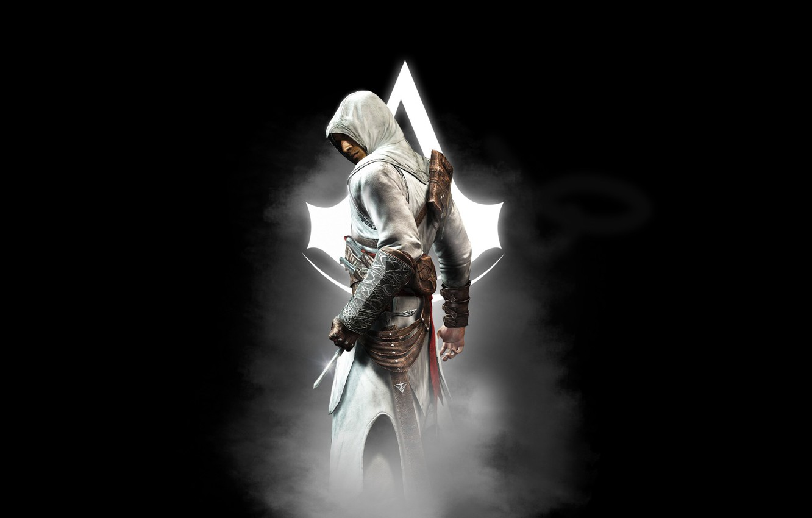

A képen Altaïr Ibn-La'Ahad, az első játék játszható karaktere látható. 1165-ben született két másik Assasin gyermekeként. A Rend Mentora, Al Mualim tanította többi ifjú növendékkel együtt. 1189-ben, 24 évesen elérte a Master Assasin rangot, melyet nemsokkal ezután elvettek tőle. Ez annak volt köszönhető, hogy elbukott azon küldetésében, hogy megyszerezze az Almát egy Templomostól. Enne következményeképp Maszjaf vára, a főhadiszállás ostrom alá került, a Rend létezése veszéjbe került. Az ostrom végeztével elindult levadászni a kilenceket, a Templomosok vezetőit. Ezzel sikerrel járt és még az Almát is megszerezte. Ekkor derült fény a Mentor korruptságára, mellyért életével fizetett. Ezt követően Altaïr vált a Rend mentorává. Megírta a Krédót, amely a Rend szabálykönyvé lett. A Szentföldet elhagyva kalandozott, eközben Assasin céheket alpított, ezzel terjesztve a Rendet. 1257-ben hunyt el, s halála óta a valaha élt legnagyobb Assasinként tartják számon.